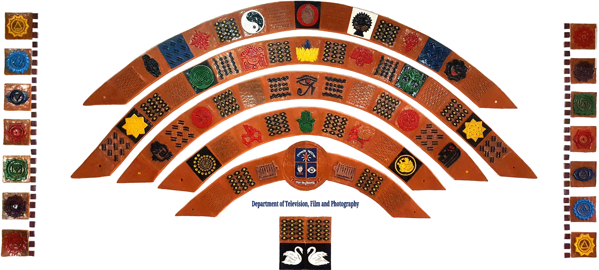
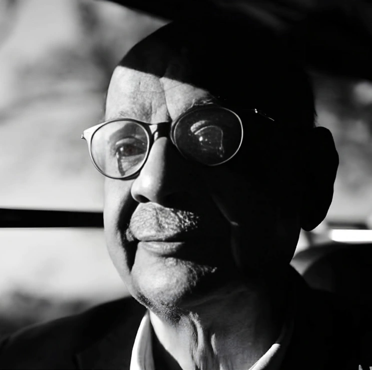
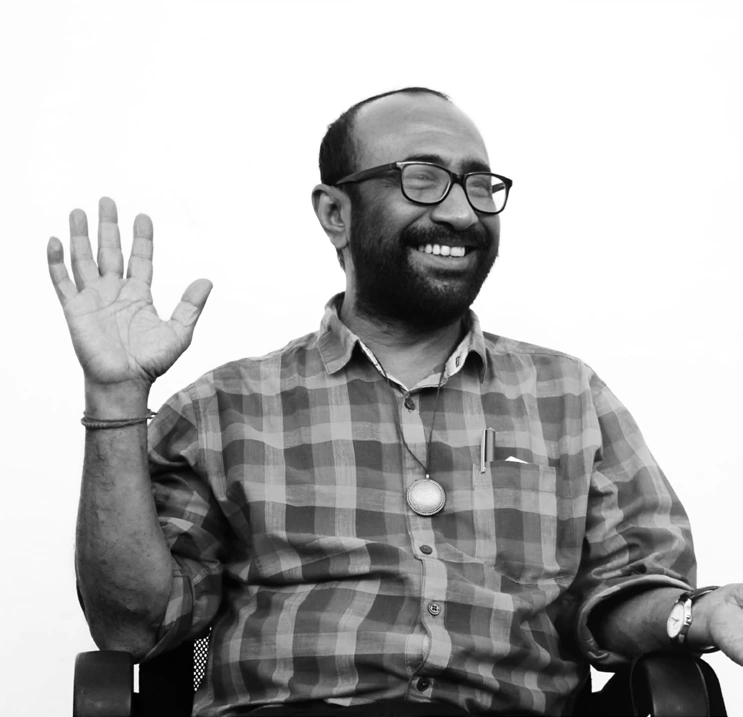

For the love
of looking closer.
SUBTEXT is a semiannual film magazine by TFP Film Club. A space for the voices, ideas, and creative spirit of students of Television, Film and Photography at the University of Dhaka.
Our inaugural issue brings together criticism, film recommendations, and conversations with filmmakers in English and Bangla. It is published by the Department of Television, Film and Photography, University of Dhaka.
Volume 1, Issue 1 · January 2026
ISSN 3134-7878
Warm wishes to all our readers.
This issue marks a beginning of our very first step into what we hope will become a long and meaningful journey. With this debut edition, we wanted to create a space shaped by the voices, ideas, and creative spirit of the students of TFP.
We received an overwhelming number of writings from TFP students for this issue. While we couldn’t include every piece in this edition, we are truly grateful to everyone who submitted their work. The amount of passion and talent we witnessed through these submissions made this first issue feel even more special, and we look forward to featuring many of them in our upcoming segments.
We are also excited to present an interview with Tanim Noor, the director of Utshob, along with a piece by S.K. Shuvo Sadique on cinema and his first Mro-language film, Dear Mother.
Thank you for being here at the very start. Stay with us—the best is yet to come.
Subha Nawer Aroni
EDITOR-IN-CHIEF14 years of
creative minds.
Department of Television,
Film and Photography
University of Dhaka
14 years of critical thinking, creativity, and excellence.
Since 2012, Dhaka University’s Department of Television, Film and Photography has been an intellectual hub shaping creative minds and media leaders.
View the announcement in Issue 01 ↗
The masthead.
ISSUE 01Subha Nawer Aroni
Saiyeed Shahjada Al Kareem
- Jannatul Raisa
- Mysha Esha
- Rahma Al Billah
- Razekuzzaman Jewel
- SK Shabbir Hossain
- Shuvo Sen
- Takia Monaw-wara Katha
- Aabid Anjum Sarker
- Pothik Roy
Pothik Roy
Department of Television, Film and Photography
University of Dhaka
Social Sciences’ Building
University of Dhaka, Shahbag
Dhaka-1000, Bangladeshtfpfilmclub.du@gmail.com ↗tfp@du.ac.bd ↗
Teachers. Filmmakers.
Lasting influences.


Remembering two of Bangladesh’s filmmaking figures who taught as adjunct faculty in the Department of Television, Film and Photography, University of Dhaka.
Bring your
perspective.
Share your articles and thoughts
with the magazine.